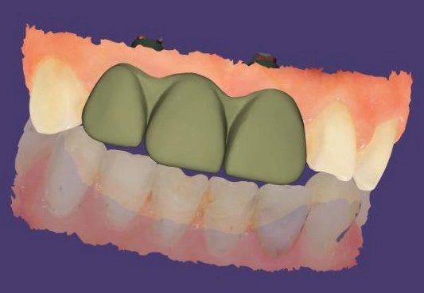
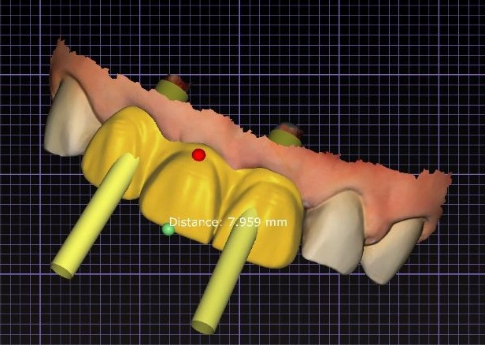

Insight 72 — Managing Bridge Esthetics in Severe Bone Resorption with a Pre-existing Diastema
Published:
Last reviewed:
فارسی
Clinical Explanation
This note is about the moment the patient looks at the provisional crowns and says the teeth are long and oversized — a statement that opens no route to a correction until it is broken down. What follows tracks an anterior bridge supported by two implants and a pontic, from that general statement to the three final decisions made with the laboratory, in a situation where severe bone resorption has increased the prosthetic space in both dimensions.
-
Clinical Explanation
When a patient says the teeth are long and oversized, that sentence on its own gives us no usable information. The patient sees the whole assembly and expresses the dissatisfaction as one general phrase. Our job is to break that general phrase down into components we can actually decide on: the incisal edge, the cervical area, crown width, and overall form. Until it is clear which component the bulk is coming from, any correction is a guess.
In this case, that component-by-component breakdown is exactly what changed the outcome. -
Clinical Situation
The patient presented needing an anterior bridge comprising two implants and one pontic. The left lateral incisor was not taken as the arch reference because it was protrusive. After the provisional crowns were delivered, the patient said the teeth were long and much too large.
Instead of accepting that statement as a whole, I asked the patient region by region which part was bothering them. What came out of that exchange was that the patient's own view was that the incisal edge position was appropriate, and that what looked oversized to her was coming from higher up — from the cervical area.
That locked one important decision in from the very start: the incisal edge position is not to be touched. Any solution had to be designed within the zone above that line.
Severe bone resorption, together with a probable history of diastema, had increased the prosthetic space both vertically and horizontally. -
Why shortening the crown does not work
With the incisal edge fixed, the only way to reduce length is to move the cervical margin coronally. But if we raise the margin, the length of the central incisors decreases while their width stays the same, and the result is wide, square teeth. On the other hand, because we are working with a single splinted bridge, we are not free to manipulate the width of the individual teeth either. In other words, both routes to correcting the dimensions directly make the proportion worse. -
The solution: pink porcelain plus control of perceived width
Three decisions were coordinated with the laboratory:
1. The length of the right canine was taken as the reference, and the length of the central incisors was set to match it.
2. The remaining cervical space, which was the result of bone resorption, was covered with pink porcelain rather than white porcelain, so that the lost gingiva would be simulated.
3. So that the teeth would not read as wide, line angles and vertical grooves were created on the buccal surface, and the staining was likewise done with vertical effects. This reduces the perceived width without changing the actual width.
The definitive crowns were fabricated on this design and delivered to the patient, and the patient accepted them. -
If they still read as wide
The next step is opening the incisal embrasures with a disc. This reduces the visible width of the crown and the teeth look more delicate. In this case it was not needed.


The content of this page is intended for the educational use of dentists and dental students.